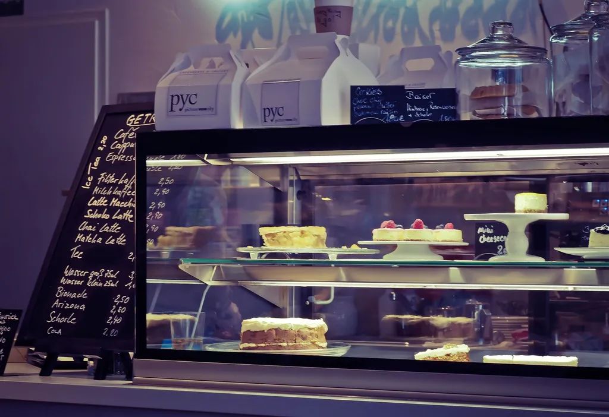

The full menu
Everything we bake,
every day.
Prices include VAT. Tap a filter to see what suits you. If you have an allergy, ask at the counter: we bake everything in one small kitchen.
Running out?
Pre-order anything on this page
Order by 6pm and we keep it on the shelf with your name on it from 8am.
Or order a celebration cake